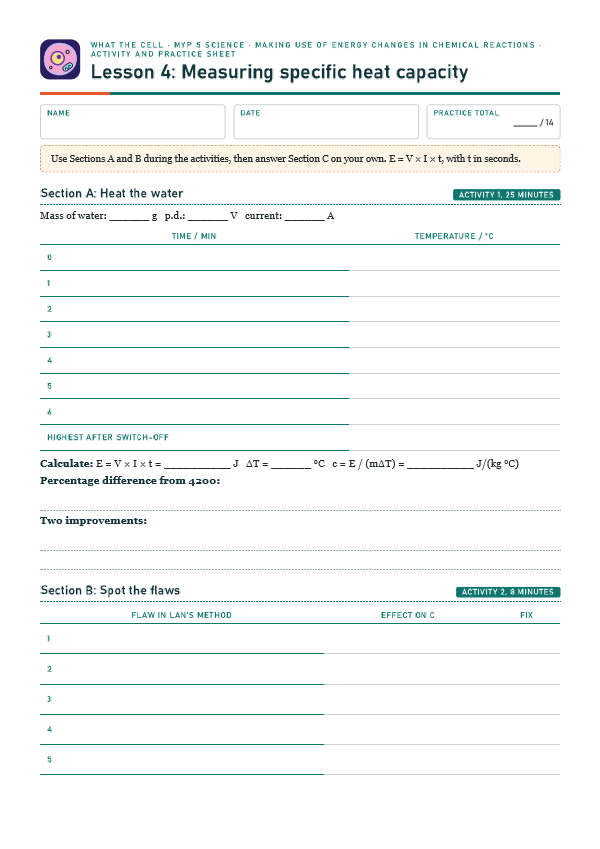

By the end of the lesson you can
- Calculate the energy from an electric heater with E = V × I × t
- Measure the specific heat capacity of water
- Process results to find c
- Evaluate the method and suggest improvements
Keys: arrows or a presentation clicker move the slides, F for full screen. Slides with a red dot have a video or simulation.
Simulations
- Lab
Energy Changes Lab: specific heat capacity
What the Cell. Supply a known energy to 0.200 kg of water and compare the temperature rise with a real experiment.
- PhET
Energy Forms and Changes
PhET, University of Colorado Boulder. Count the energy chunks that escape to the air and think how to stop them.
Print and practise

Activity and practice sheet
Used in the lesson’s activities, with practice questions. Your teacher has the answers.
Download (PDF)Lesson 4 slides
All 22 slides in one file, to read again or print. The video buttons on the slides open YouTube.
Download the slides (PDF)Revising? The Revision tab on the unit page has the unit notes and review.
Notes: Measuring specific heat capacity
The method
Put a 12 V heater and a thermometer in a known mass of water in an insulated cup with a lid. Record the p.d., current and temperature every minute while it heats; stir before each reading; record the highest temperature after switching off.
Energy supplied
E = V × I × t (J, V, A, s). For 12 V, 4.0 A and 6 minutes: E = 12 × 4.0 × 360 = 17 280 J. A joulemeter reads E directly.
Finding c
c = E / (mΔT). For 0.200 kg of water warming by 16.7 °C: c = 17 280 / (0.200 × 16.7) = 5170 J/(kg °C).
Why it is too high
Some energy heats the cup, the thermometer and the air, so ΔT is smaller than it should be. A smaller ΔT makes c come out bigger. This is a systematic error: repeating does not fix it.
Percentage difference
(measured − accepted) / accepted × 100. Example: (5170 − 4200) / 4200 × 100 = 23% too high.
Improvements
Better insulation and a lid; cover the heater fully before switching on; stir before every reading; keep reading after switch-off until the temperature stops rising; use a digital probe.
Key words
| E = V × I × t | energy (J) = p.d. (V) × current (A) × time (s) |
|---|---|
| joulemeter | a meter that measures the energy supplied directly |
| systematic error | an error that shifts every reading the same way, such as heat loss |
| random error | unpredictable scatter in readings; reduced by repeats |
| percentage difference | (measured − accepted) / accepted × 100 |
| gradient | the slope of a graph: rise / run |